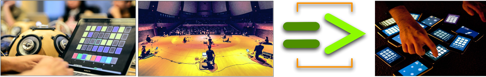

Ge Wang |
Creative Consulting
I offer expertise in a number of areas, at the unique intersection of
design, technology, product, and marketing. You'll find some of my
consulting offerings below, as well as my experience and credentials.
|
contact:
consulting/at/gewang/dot/com
| |
Product Design + Software
Prototyping
I specialize in product design integrating
audio/music, interaction, game-elements, real-time graphics, and/or social exchange (more
broadly, I can consult on any product aimed at consumers). Equally
comfortable in design as well as technology and software development, I
create nuanced core interaction prototypes as well as high-performance
audio-visual engines (mobile or desktop); First-hand experience integrating design, product,
engineering, and marketing.
Relevant Credentials:
- Smule: Co-founder + Chief Creative + CTO (2008-2013)
- by 2013, Smule apps have reached over 125 million users
- company vision; product design; integration of design, engineering, marketing
- deep command of design, technology, aesthetics, product, marketing
- was lead designer and engine programmer for:
- Ocarina (2008) - 1st class hall of fame app
- Leaf Trombone: World Stage (2009) - massive social music game
- Magic Piano (2010) - 80M+ users
- Magic Fiddle (2011) - #1 selling iPad app

Music Technology Research
I conduct state-of-the-art research in computer music and
interaction design, audiovisual software design, audio/music/DSP algorithms,
sound synthesis and design, instrument design, installation design, teaching; computer music
performance. • My broader research interests include: Design; Programming languages and
interactive software systems for computer music; Mobile music; Physical and virtual interaction design; Sound synthesis and analysis; Computer-mediated performance & ensembles: laptop
orchestra and mobile phone orchestra; Human-computer interaction; Social
music, Visualization; Design and aesthetics of music software;
Methodologies for education at intersection of music, computer science,
and design.
Relevant Credentials:
- Stanford University: Assistant Professor, CCRMA | Music (2007-present)
- Ph.D., Computer Science, Princeton University
- B.S. Computer Science, Duke University
- Curriculum Vitae
- research in computer music, interaction design, music software, mobile music, laptop orchestra
- core works:

Public Speaking
I speak on my work, my art, and personal story. Topics include "The Art
of Computing and Music", "The DIY Orchestra of the Future", "ChucK
Programming Language", "The World is Your Stage: Mobile Music", "New
Classrooms in Computer Science + Music", "Designing Interfaces for Music",
"At the Intersection of Music, Design, Computer Science; Art and
Entrepreneurship."
Relevant Credentials
- Have given over 100 keynotes and invited talks (2006-present)
-
My
 talk:
DIY Orchestra of the Future" (1M+ views) talk:
DIY Orchestra of the Future" (1M+ views)
- China Central Television (CCTV):
"We World/一人一世界"
- the Entertainment Gathering (2010, 2011, 2012; EG4, EG5, EG6)
- United States Library of Congress (special presentation on Music & Technology)
- Web 2.0 Expo 2010 (Keynote)
- Mobile Developer Conference China 2012 (Keynote)
- Apple World-Wide Developer Conference (Keynote)
- Korea TECH+ National Forum (2011, 2012)
- Distinguished Lecture Series at:
Yale, Duke, MIT, CalArts,
Dartmouth, LSU, School of Art Institute of Chicago, Peking University
- 8+ years Stanford professor
- designed and taught Stanford courses:
Creative Marketing Consulting
I offer expertise and strategy in product marketing, product+marketing
integration, launch, product photography & video production, press/media advising/consulting.
Can directly address each of the areas of product design, marketing, and
engineering (and their intersection).
Relevant Credentials
- Smule co-founder and Chief Creative, working
day-to-day integrating product, design, marketing, and engineering.
- have launched over a dozen mobile music apps, with over 125 million users.
- creator of product launch and teaser videos, including:
- served as company spokesperson at Smule, interfacing regularly with
New York Times, USA Today, technology press; selected samples:
Video Production + Photography
I offer a unique lens to create videos for product launch, research projects,
workplace/lab culture documentation, music + technology performance, demonstrations,
installations; as well as story-telling and short films.
Video + Photo Portforlio
- Selected video works:
-
Beijing: You and Me (2013) direction, camera, editing
(shot on Nikon D800, 70/200mm f/2.8, editing: Final Cut Pro)
-
NE China: Fast (2013) on the road in northeast China
(shot on Nikon D800, 14/24mm f/2.8, editing: Final Cut Pro)
-
Ocarina Medley (2012) direction, camera, editing
(shot on Nikon D800, 24/70mm f/2.8, Canon 5D2, editing: Final Cut Pro;
with Turner Kirk and Andrew Briggs)
-
Ocarina Stairway (2008) direction, camera, editing
(shot on Sony HD, editing Final Cut Pro)
-
Ocarina World (2008) direction, camera, editing
(shot on Sony HD, editing Final Cut Pro)
-
Magic Piano: Chariots o' Fire (2011) direction, editing
(shot on Sony HD, editing Final Cut Pro, with Turner Kirk)
-
AutoRap: Cornholio Stress Test (2012) direction, editing
(shot on Nikon D800, 24/70mm f/2.8, editing: Final Cut Pro;
with Turner Kirk and Jessica Wan)
-
NeuroMusic Lab: A Day in the Life (2014) direction, camera, editing
(shot on Nikon D800, 24/70mm f/2.8, editing: Final Cut Pro)
- Selected still photography:
|